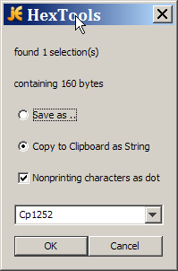

Author: Jürgen Weber
Permission is granted to copy, distribute and/or modify this document under the terms of the GNU Free Documentation License, Version 1.1 or any later version published by the Free Software Foundation; with no Invariant Sections, Front-Cover Texts or Back-Cover Texts, each as defined in the license. A copy of the license can be found in the file COPYING.DOC.txt included with jEdit.
HexTools Plugin extracts data from a hex dump and saves into a file or into the clipboard.
00000000 6a 45 64 69 74 20 69 73 20 61 20 67 72 65 61 74 |jEdit is a great| 00000010 20 74 65 78 74 20 65 64 69 74 6f 72 2e 0d 0a | text editor...| 0000001fSelect the data area of the hex dump (it is recommendable to use rectangular selection) and choose Plugins->HexTools. You get this dialog, where you can choose to save the hexdump data or copy it as String to the clipboard using the selected encoding. The conversation works by stripping all whitespace from the selection and parsing two hex digits at a time.

The source code is distributed under the GPL. Please see http://www.fsf.org/copyleft/gpl.html
The preferred way to send bug reports is to use the Sourceforge Bug Tracker for jEdit at http://sourceforge.net/projects/jedit/
You can also write to:
jEdit-users mailing-list jedit-users@lists.sourceforge.net
or jEdit-devel mailing-list mailto:jedit-devel@lists.sourceforge.net